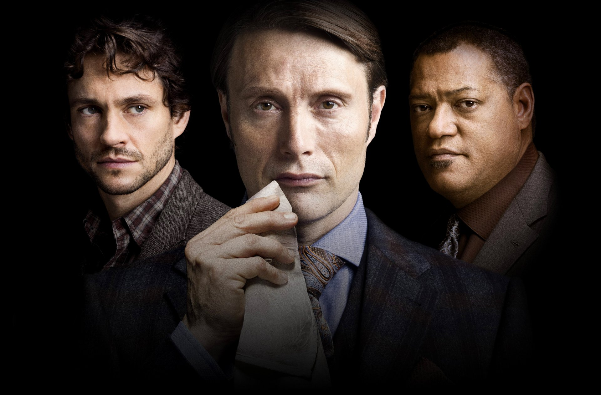
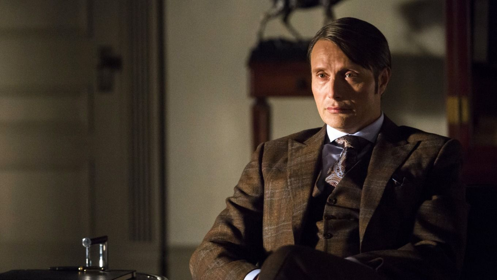
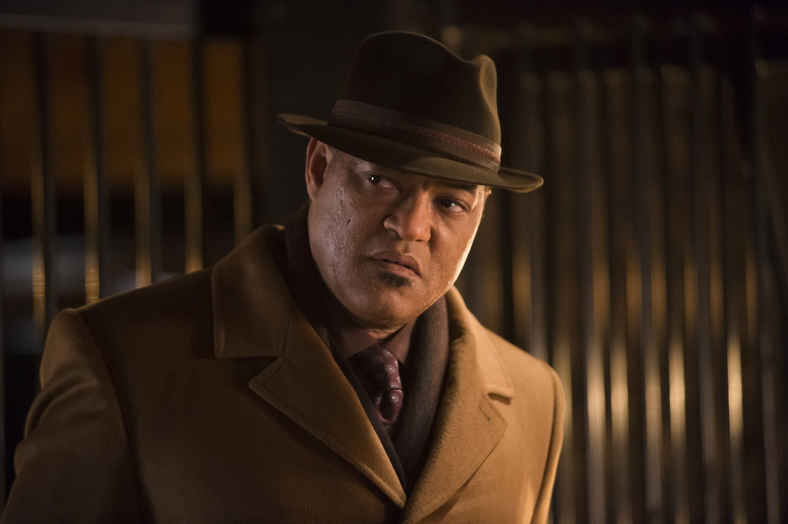

Главные герои
В сериале присутствует несколько действуюищх лиц, каждый из которых запоминается зрителю по-разному.
Уилл Грэм - главный герой "Ганнибала" канала NBC. Он - профилировщик преступников и охотник за серийными убийцами, обладающий уникальной способностью, которую он использует для идентификации и понимания убийц, которых он выслеживает. Уилл живет в фермерском доме в Вулф Трэп, Вирджиния, где он делит свое жилище со своей семьей собак (всех которых он приютил как бездомных). Первоначально преподавал криминалистику в ФБР, затем был возвращен на работу Джеком Кроуфордом и работал вместе с Ганнибалом Лектером, чтобы выслеживать серийных убийц.Уилл обладает уникальной психологической способностью, которую он называет "интерпретацией доказательств". На самом деле, он способен принять душевное состояние убийцы после посещения места преступления и воссоздает мышление (а также действия) самого себя в роли убийцы, чтобы лучше понять их. Ганнибал Лектер описывает свою способность как "чистое сопереживание".
Доктор Ганнибал Лектор является номинальным главным антагонистом. Ганнибал - психиатр, который работает со специальным агентом Уиллом Грэмом по выслеживанию серийных убийц. Неизвестный своим коллегам Ганнибал - серийный убийца-каннибал, известный как Чесапикский потрошитель, который работает за спиной Грэма, чтобы продолжать свои собственные преступления. Однако иногда он использует их для других целей, таких как совершение двух убийств в качестве "подражателя" преступлениям Гаррета Джейкоба Хоббса, чтобы представить Грэму более четкую картину истинных мотивов убийцы.
Джек Кроуфорд - специальный агент ФБР и глава отдела поведенческих исследований в ФБР, а также босс Уилла Грэма. Женат на Белле Кроуфорд. Имеет очень сильный и крепкий характер, который неоднократно испытывается на протяжении всего сериала.
Алана Блум - одна из главных героинь телесериала. Она профессор психологии, консультант ФБР и бывшая ученица Ганнибала Лектера. Она также является приглашенной лекцией в Квантико, что делает ее коллегой и другом Уилла Грэма.